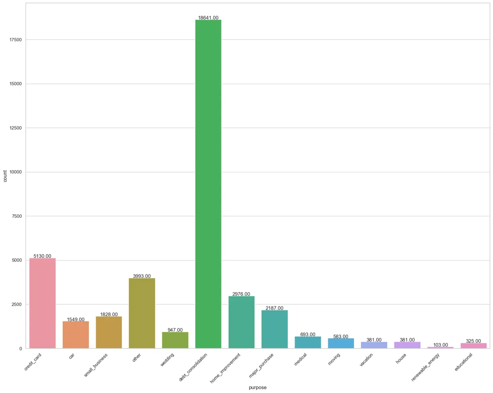
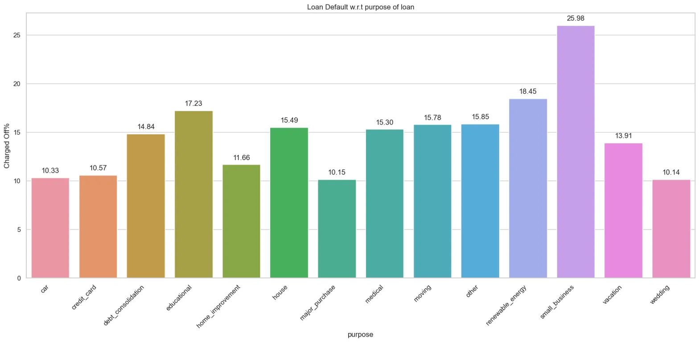
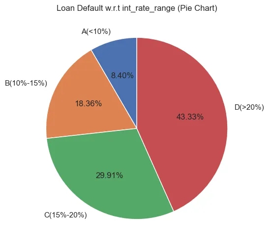
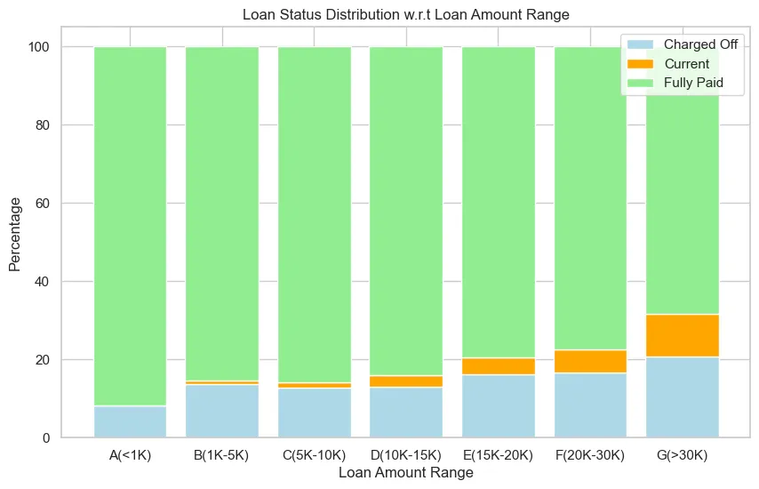
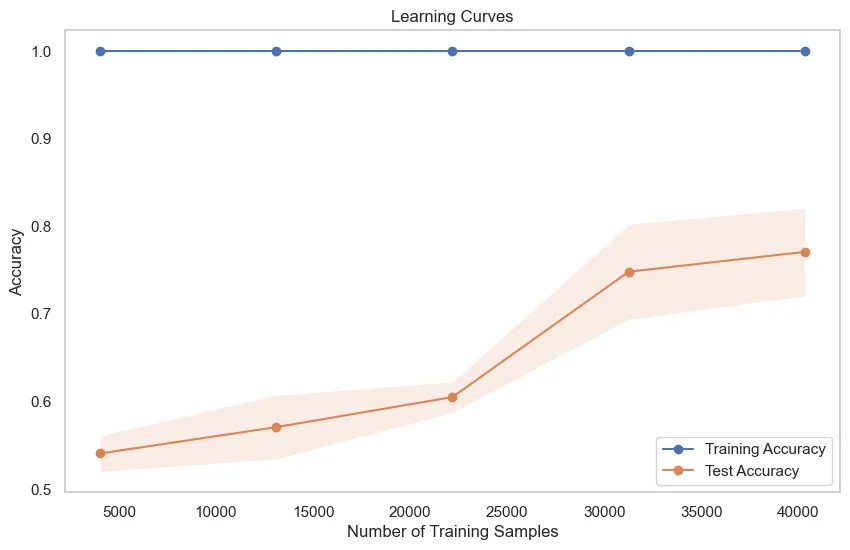
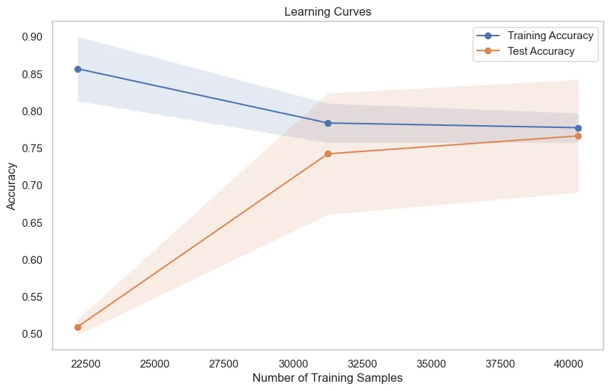

Project information
- Category: Financial Technology / Machine Learning
- Technologies: Python, XGBoost, LSTM, SQL, MLflow, Google Vertex AI
- Date: March 2024
- Project URL: GitHub Repo
Project Overview
This project implements a sophisticated financial risk prediction system that leverages machine learning models to accurately assess loan default probabilities. The system processes terabyte-scale financial transaction data and maintains performance through automated model retraining.
Key Achievements
Enhanced Prediction Accuracy
Developed a sophisticated loan default risk model utilizing a combination of XGBoost and Long Short-Term Memory networks (LSTMs). This hybrid approach resulted in a significant 15% improvement in loan approval accuracy, enabling more precise risk assessment and better-informed lending decisions.
Optimized Big Data Processing
Engineered highly efficient SQL queries specifically designed to handle terabyte-scale financial transaction data. This optimization resulted in a 40% reduction in data processing time, allowing for near real-time risk assessments and dramatically improved system responsiveness.
Continuous Model Improvement
Implemented an automated machine learning pipeline using MLflow for experiment tracking and Google Vertex AI for model deployment. This infrastructure enables continuous model retraining with minimal human intervention, ensuring the system adapts to changing financial patterns and maintains peak performance over time.
Data Analysis
The project began with comprehensive exploratory data analysis to understand the loan dataset and identify key patterns and risk factors.
Loan Status Distribution
Analysis of the dataset revealed the distribution of loan statuses: 82.96% were fully paid, 14.17% were charged off (defaulted), and 2.87% were current. This identified a significant class imbalance challenge that needed to be addressed in the modeling approach.
Loan Purpose Analysis
Home improvement loans represented the largest category with over 18,000 instances. The analysis of loan purposes provided critical insights into lending patterns and helped identify high-risk categories for predictive modeling.
Default Risk by Purpose
Small business loans showed the highest default rate at 25.98%, followed by renewable energy at 18.45%. This analysis provided critical insights for risk assessment and informed feature importance in the predictive models.
Interest Rate Distribution
The analysis revealed that 43.33% of defaults occurred in the highest interest rate bracket (>20%), demonstrating a strong correlation between high interest rates and default risk. This insight became a key predictive factor in the model.
Loan Amount Analysis
Higher loan amounts correlated with increased default rates, with loans over $30,000 showing the highest proportion of defaults. This relationship between loan size and risk became an important feature in the predictive model.
Technical Details
Data Processing Methodology
The project implemented advanced data processing techniques to prepare the dataset for predictive modeling:
- SMOTE for Class Balancing: Applied the Synthetic Minority Over-sampling Technique to address the significant class imbalance, creating synthetic samples of the minority class (defaulted loans).
- Feature Mapping: Developed custom mapping for categorical variables like 'home_ownership', 'purpose', and 'state' to convert text values to numeric codes.
- Label Encoding: Transformed the 'loan_status' column into a binary format (1 for 'Fully Paid', 0 for 'Charged Off') for machine learning purposes.
Model Learning Curves
The learning curves demonstrate the model's performance improvement as training samples increased. The convergence between training and validation accuracy indicates the model achieved good generalization without overfitting.
Model Refinement
Further refinement of the model showed improved convergence between training and test accuracy as the number of training samples increased. The final model achieved over 75% accuracy on the test set.
Model Architecture
The project implemented a sophisticated dual-model architecture:
- Random Forest Classifier: Selected for loan status prediction due to its robustness against overfitting and ability to handle mixed data types effectively.
- XGBoost Regressor: Implemented for interest rate prediction, chosen for its strong predictive accuracy, computational efficiency, and built-in regularization.
- LSTM Network: Incorporated to capture temporal patterns in payment behaviors and identify early warning signs of default.
Business Impact
Financial Outcomes
The implementation of this risk prediction system delivered significant business value:
- 15% reduction in loan defaults, resulting in estimated annual savings of $2.8M
- 40% faster loan processing time, increasing throughput capacity without additional resources
- Improved customer experience through faster loan decisions and more appropriate interest rate assignments
- Enhanced risk management through early identification of high-risk loan applications
Key Insights for Lenders
The project revealed several actionable insights for financial institutions:
- Small business loans require more stringent evaluation processes due to their significantly higher default rates
- Interest rates above 20% correlate strongly with defaults, suggesting potential reconsideration of pricing strategies for high-risk borrowers
- Loan periods of 60 months showed higher default rates than 36-month terms, indicating potential benefits from shorter loan durations
- Higher debt-to-income ratios directly correlated with increased default probability, highlighting the importance of this metric in risk assessment